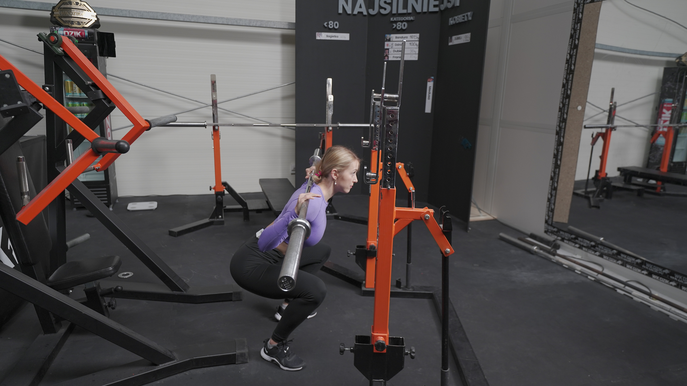
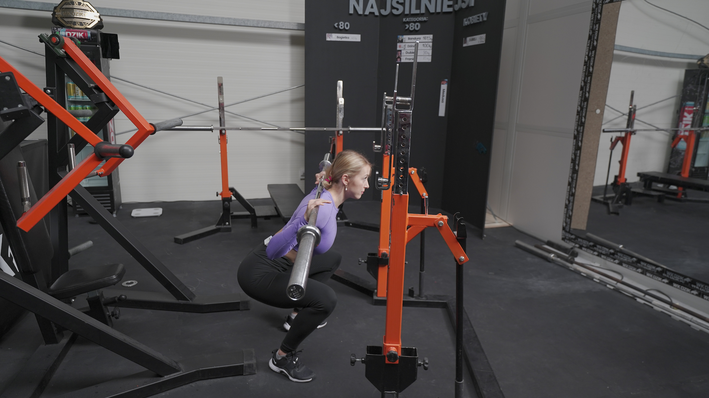

PRZYSIAD KLASYCZNY
 

1. Stojaki ustaw na takiej wysokości, abyś swobodnie mogła wejść pod sztangą i ułożyć ją na górnej części swoich pleców.
2. Złap sztangę nieco szerzej niż szerokość Twoich barków.
3. Zepnij brzuch oraz pośladki. Wynieś sztangę ze stojaków robiąc 2 kroki w tył.
4. Stań na szerokość bioder. Palce skieruj przed siebie lub delikatnie na zewnątrz.
5. Wykonaj ruch, jakbyś chciała “wkręcić” swoje stopy w podłoże.
6. Obniż pozycję łopatek, wykonując ruch, jakbyś chciała “złamać sztangę”.
7. Głowa powinna stanowić przedłużenie tułowia.
8. Rozpocznij ruch, wypychając biodra delikatnie w tył. Nie zaczynaj od ruchu samych kolan.
9. Schodź w dół, kierując kolana na zewnątrz.
10. Zejdź tak nisko, jak pozwala Ci Twoja mobilność. Zadbaj o to, aby miednica nie podwijała się za mocno (delikatne podwijanie jest akceptowane).
11. Wykonaj ruch wstawania ze sztangą, cały czas kierując kolana na zewnątrz.
12. Możesz dopiąć pośladki w górnej fazie, pamiętaj jednak, aby nie robić przeprostu.